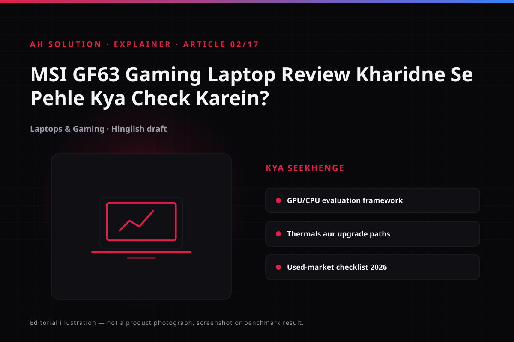

The AH Solution review published in November 2021 was titled "MSI GF63 Gaming Laptop Review – Worth Buying?", and it landed in the festive sale season, when Big Billion Days offers peaked. Those prices and offers no longer apply, so they are not repeated here. The focus is an evaluation framework for judging a GF63, or a similar gaming laptop.
The MSI GF63 is a series, not a single laptop: the same name covers many combinations of processor, graphics card, display and memory, so one unit's verdict does not transfer to another. This article does not claim to know the exact SKU of the reviewed unit; it uses remaining public specification data and the typical configurations of that generation — verify these against the official listing.
Original video: MSI GF63 Gaming Laptop Review – Worth Buying? Video published: 06 November 2021 · Duration: 05:04
Video context: a festive-season review from 2021
The video appeared in the festive sale period, when online marketplace offers were running; those discounts and stock applied only then. The clip is still useful for the build, port layout, hinge and design, but current pricing needs a live listing. Which SKU was reviewed matters too, because configurations under the same name differ so widely. More gadget videos are on vlogs.html.
The GF63 family: typical configurations of that generation
The table lists "typical configurations" — not every unit looks like this. Verify the exact SKU against the official listing, invoice or device information.
| Component | Typical options of that generation | Where to verify |
|---|---|---|
| Processor | 10th/11th-gen Intel Core H-series (i5/i7 class) | Full model number |
| Graphics | GTX 1650-class 4GB; some configs carry a higher GPU | Device Manager, GPU-Z |
| Display | 15.6-inch FHD IPS-level, 144Hz option | Refresh rate in Settings |
| Memory | DDR4, dual slots, expandable | Free slot, maximum capacity |
| Storage | NVMe SSD; some configs add a 2.5-inch SATA bay | Disk Management, service manual |
| Body/battery | ~1.86 kg class, 51–52.4Wh class battery, 120W adapter | Weight, battery health |
The first job: read the exact CPU and GPU model numbers on the listing. Assuming performance from the "gaming laptop" label alone is the biggest mistake here.

GPU and CPU tiers: setting realistic expectations
The GPU tier decides the gaming result
Even with an H-series CPU, an entry-level GPU means heavy titles run at low or medium settings and no higher. Find the GPU model, VRAM and power limit, then compare them with the requirements listed for the games you play, not with marketing numbers. The gap between SKUs shows in an independent GF63 review too.
Judge the CPU by the workload
Outside gaming, editing, compilation and heavy multitasking depend on core count and generation. The H-series chips of that generation handled daily work and mid-range gaming, but in 2026 their driver and software support needs checking.
RAM, storage and the upgrade path
Many GF63 configurations shipped with little memory, making an upgrade the first option:
- How many slots there are, how many are free, and the maximum supported RAM.
- For storage, a free M.2 slot or a 2.5-inch bay — model-specific.
- The warranty rule when memory or an SSD is replaced; read it in the service manual.
- On a used laptop, whether the installed upgrade came with an invoice.
Price the upgrade from current component prices, not from a listing's "upgradeable" claim.
Thermals, display and build: hands-on checks
Thermals. Run a heavy game or a stress test for 15–20 minutes. Falling sustained performance, fans at full speed or a hot chassis are red flags. The thin chassis keeps heat a common complaint area for GF63-class laptops.
Display. Check that the refresh rate listed in Settings, such as 144Hz, actually applies — some units run lower. Look for dead pixels, uneven backlight and viewing angles too.
Build and ports. Test hinge tension, keyboard feel and backlight, the trackpad, every USB and HDMI port, Ethernet, the webcam, speakers and Wi-Fi. One port check prevents half the return problems.
Evaluating a used GF63 today
| Check | What to look for |
|---|---|
| Exact SKU | CPU/GPU model matches Device Manager and the invoice |
| Thermals | Temperature under load, fan noise, no throttling |
| Battery | Health and cycle count, original rated charger or not |
| Display | Refresh rate applies, dead pixels, bleed |
| Upgrades | Free RAM/storage slots, SSD health report |
| Warranty | Transfer possible, service centre in your city |
| Seller terms | Invoice, return window and replacement policy in writing |
Warranty and service coverage deserve attention: a gaming laptop repair bill can be a large share of the device's value. Weigh GPU tier, battery, warranty and service against current-generation alternatives, not price alone.
Troubleshooting and limitations
- Wrong GPU assumption: the listing says "GF63" but a different GPU is inside. Confirm with GPU-Z.
- Refresh rate does not apply: select it manually in the display adapter settings, then update the driver.
- Performance drop: dust or aged thermal paste commonly causes throttling; have an authorised centre clean it.
- Fast battery drain: thin gaming laptops empty quickly under load — run them plugged in.
- Driver support: an older GPU's release cycle may be limited, so check compatibility with your OS.
Safety and privacy
Avoid purchase risk first: get the invoice, read the seller's written warranty and return policy, and keep proof of payment. On a used machine, remove every account left by the previous owner and do a clean Windows setup, so old data is not visible to you. Avoid personal logins on public Wi-Fi and set the relevant privacy controls — see our privacy.html guide. Never carry a unit with a swollen battery or a charger that sparks.
Frequently asked questions
What type of gaming laptop is the MSI GF63?
The GF63 is a thin-and-light gaming laptop series in which 10th/11th-gen Intel H-series CPUs and GTX 1650-class GPUs appear. Many configurations share the name, so the full SKU of the individual unit decides the performance.
How do I find out exactly which GPU is in this laptop?
Read the GPU model and VRAM with Device Manager or GPU-Z, then match them against the invoice or official listing. A listing's headline text alone is not enough.
Does a 144Hz panel deliver 144fps in every game?
No. A panel can only display what the GPU produces. On heavy titles the frame rate drops considerably, and you then need V-Sync, a frame cap or adjusted settings. Treat display and GPU as separate things.
Is the 2021 festive-sale price still valid?
No. Sale prices, stock and offers change with time. Compare the current price against live listings, seller ratings and return terms, and do not read an old offer as today's discount. The price disclaimer is also on our terms.html#disclaimer page.
What is the most important check on a used GF63?
Confirming the exact GPU and CPU, testing thermals under load, checking battery health and the charger, the display, and warranty and invoice status.
Final recommendations
A GF63 is a sensible purchase only when the exact configuration, condition and price match your use case. Confirm the SKU first — GPU, CPU, RAM, storage, display — then check thermals, battery and warranty, and compare prices after that. Do not treat old festive-sale figures as the current market rate; weigh the GF63's package today against current-generation alternatives at the same budget, and proceed only with the invoice, the return window and service coverage in writing.
Resources and official links
- Notebookcheck GF63 Thin 9SC review — independent test data.
- TechPowerUp GPU-Z download — to confirm the GPU model and VRAM.
-